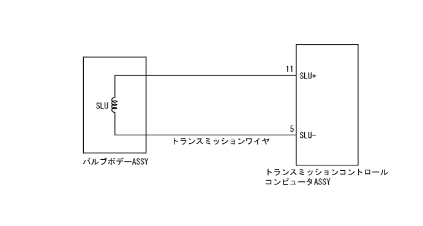

DTC P2757/68 SLU Solenoid Circuit (Functional Malfunction) |
| DTC No. SAE/TCCS | DTC Detection Conditions 1. Diagnosis conditions 2. Malfunction status 3. Malfunction duration 4. Other | Inspection Area |
|---|---|---|
| P2757/68 |
|
|

| Step 1 | Read DTC |
Using SST (TaSCAN), follow the prompts on the screen to display the [Diagnosis Menu/ECT] screen, and select [DTC Freeze Data].
Check the DTCs and freeze data.
| Result | Proceed to |
|---|---|
| Only P2757/68 is output | A |
| P2757/68 and other DTCs are output | B |
|
| ||||
| A | |
| Step 2 | Inspect Lock-up Control Solenoid (SLU) |
 |
Check that the valve in the solenoid operates when battery positive is connected to terminal 2 and battery negative to terminal 1 of the lock-up control solenoid (SLU) through the 12V-21W bulb.
Using SST (Toyota electrical tester), measure the resistance between the terminals.
| Tester Connection (Terminal Symbol) | Condition | Standard |
|---|---|---|
| Terminal 1 - Terminal 2 | 20°C | 5.0 to 5.6Ω |
|
| ||||
| OK | |
| Step 3 | Inspect Transmission Valve Body Assembly |
Visually check that there are no abnormalities in the solenoid installation areas of the valve body, etc.
|
| ||||
| OK | |
| Step 4 | Replace Transmission Control Computer Assembly |
Replace the transmission control computer assembly. (see)
Perform AT learned value initialization and AT unit compensation. (see)
| NEXT | |
| Step 5 | Clear DTC |
Clear the DTCs. (see)
| NEXT | |
| Step 6 | Check DTC Output |
Perform a road test based on the customer problem analysis and freeze frame data. (see)
Recheck the DTCs. (see)
| Inspection Result | Proceed to |
|---|---|
| P2757/68 is output again | A |
| DTC normal | B |
|
| ||||
| A | |
| Step 7 | Inspect Torque Converter Assembly |
for reference.
|
| ||||
| OK | |
| Step 8 | Repair or Replace Automatic Transaxle Assembly |
Repair or replace the transaxle assembly (ATM). (see)
| NEXT | ||
| ||